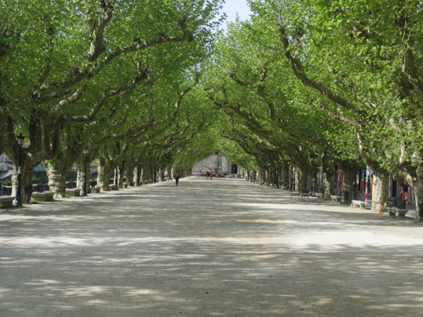
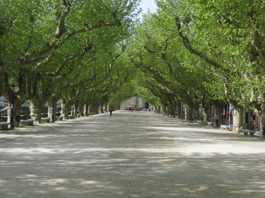

“En Iria aprendí fabulosas historias de la familia, marinos que habían dado la vuelta al mundo, abuelos que construían ferrocarriles en la India, tíos abuelos que desarmaban moros a patadas, príncipes húngaros que pretendían emparentar con nosotros… En Iria también aprendí a cazar grillos y a amaestrar pollos, que no es nada fácil y que hay que tener mucha paciencia…” Camilo José Cela. La rosa.
“En Iria, en casa de la abuela, en la casa en la que vine al mundo, me siento muy feliz recorriendo de nuevo mis viejos paisajes familiares, Pedreda, Pazos, el río Sar, el Monte Meda, los literarios pinares de Bastabales, la casa de La Retén con sus recuerdos de Rosalía, Herbón con sus pimientos y sus lampreas, hacía ya tiempo que no caminaba por este rincón para mí entrañable del que llegué a pensar que no volvería a verlo nunca.” Camilo José cela. Memorias, entendimientos y voluntades.
Casa natal
“En la vía, en el paso a nivel de Iria Flavia, construyó mi bisabuelo su casa, como buen
ferroviario, y en esta casa nacimos mi abuela Nina y yo. La casa de Iria es una casa cuadrada,
de dos plantas con dos galerías, una al norte y otra al sur, y con la fachada principal –que
ahora, con la desviación de la carretera, queda a la parte de atrás- cubierta por completa de
guisantes de olor, de rosas francesillas y de madreselva. Alrededor de la casa hay un jardín
donde en tiempos – tiempos que yo recuerdo, ¡ay!, perfecta y dolorosamente- crecían las
palmeras airosas, y el inmenso y extraño naranjo, y el aromático limonero y, a su lado, el pino
real y el árbol del holle, el árbol de las navidades inglesas y de los más clásicos christmas-cards,
con sus pinchantes hojas de un verde brillador y sus minúsculos frutos de un rojo reluciente.”
“A las nueve y veinte de la noche del día 11 de mayo de 1916, jueves, vine a este valle de
lágrimas en la casa del paso a nivel de Iria Flavia, ayuntamiento de Padrón, diócesis de
Santiago de Compostela, provincia de La Coruña, banda de estribor de la ría de Arosa, allá
donde se encuentran los ríos Sar y Ulla; fui el primer hijo de los varios que tuvieron mis
padres” “Yo nací nieto de ferroviarios, como ya dije, y con la cama de mi madre retemblando
por el paso del tren. “En Iria, en casa de mi abuela, paso la tos ferina. Es el tiempo de las vacas
gordas en la familia y tanto la abuela como mis tías pintaron de oro y azul aquellas semanas,
felices a pesar de los golpes de tos que me dejaban rendido y medio muerto. Años más tarde
–pocos años más tarde- y subido a un manzano, como oí decir que hacía Rosalía, escribo mis
primeros versos: Oda al mar y Madre, madre. Los originales los guardó mi madre hasta la
guerra civil, en que se perdieron. Al pie del manzano hay un criado, por si me caigo.”
”Merendábamos en un pradito que había detrás de la casa y que hoy se comió la desviación de
la carretera.”

Vía do tren

“Era un ferrocarril familiar en el que las pescadoras y las lecheras pedían rebaja en la taquilla, con unos trenes amables y renqueantes tirados por viejas máquinas que parecían sacadas de las películas del Far West. Las locomotoras –más humanas, mucho más humanas que las que vinieron después-, tenían sus nombres propios grabados, en una placa reluciente, sobre la panza: Princesa de Asturias, Príncipe de Gales, María Cristina, Ría de Arosa, Minero Primero, Vázquez Mella. Cada tren tenía su maquinista y su fogonero, siempre los mismos, y la gente, en vez de hablar de mixtos y de correos, llamaba a los trenes por el apellido de su conductor: «Xa ven Pereira», «Hoxe pasa a tempo Lourido», «Fernández Leva moito retraso», etc. Algunos escritores se metieron con el tren, porque paraba delante de la casa para que nos bajásemos alguno, o en un túnel para que el fogonero llenase el botijo de agua fresca. Allá ellos.”
Fundación pública galega Camilo José Cela
“Aquí se encierra todo cuanto, desde hoy, dono a la cultura para su mejor beneficio y más adecuado y provechoso logro. Lo que aquí se ha de guardar lo entrego a la cultura, decía, ese latido que se expresa en todas las lenguas del mundo, presentes y aun pretéritas, vivas e incluso muertas, grandes y también pequeñas, de origen cierto y noble de cuna desconocida y borrada, pero también lo deposito –y ni por capricho ni por casualidad- en el confín del Occidente que me vio nacer para mi fortuna y mi orgullo. Vaya hacia esta verde y luminosa y entrañable latitud mi mejor y más rendido reconocimiento.”
Casa natal
“En la vía, en el paso a nivel de Iria Flavia, construyó mi bisabuelo su casa, como buen
ferroviario, y en esta casa nacimos mi abuela Nina y yo. La casa de Iria es una casa cuadrada,
de dos plantas con dos galerías, una al norte y otra al sur, y con la fachada principal –que
ahora, con la desviación de la carretera, queda a la parte de atrás- cubierta por completa de
guisantes de olor, de rosas francesillas y de madreselva. Alrededor de la casa hay un jardín
donde en tiempos – tiempos que yo recuerdo, ¡ay!, perfecta y dolorosamente- crecían las
palmeras airosas, y el inmenso y extraño naranjo, y el aromático limonero y, a su lado, el pino
real y el árbol del holle, el árbol de las navidades inglesas y de los más clásicos christmas-cards,
con sus pinchantes hojas de un verde brillador y sus minúsculos frutos de un rojo reluciente.”
“A las nueve y veinte de la noche del día 11 de mayo de 1916, jueves, vine a este valle de
lágrimas en la casa del paso a nivel de Iria Flavia, ayuntamiento de Padrón, diócesis de
Santiago de Compostela, provincia de La Coruña, banda de estribor de la ría de Arosa, allá
donde se encuentran los ríos Sar y Ulla; fui el primer hijo de los varios que tuvieron mis
padres” “Yo nací nieto de ferroviarios, como ya dije, y con la cama de mi madre retemblando
por el paso del tren. “En Iria, en casa de mi abuela, paso la tos ferina. Es el tiempo de las vacas
gordas en la familia y tanto la abuela como mis tías pintaron de oro y azul aquellas semanas,
felices a pesar de los golpes de tos que me dejaban rendido y medio muerto. Años más tarde
–pocos años más tarde- y subido a un manzano, como oí decir que hacía Rosalía, escribo mis
primeros versos: Oda al mar y Madre, madre. Los originales los guardó mi madre hasta la
guerra civil, en que se perdieron. Al pie del manzano hay un criado, por si me caigo.”
”Merendábamos en un pradito que había detrás de la casa y que hoy se comió la desviación de
la carretera.”
Vía do tren
“Era un ferrocarril familiar en el que las pescadoras y las lecheras pedían rebaja en la taquilla,
con unos trenes amables y renqueantes tirados por viejas máquinas que parecían sacadas de
las películas del Far West. Las locomotoras –más humanas, mucho más humanas que las que
vinieron después-, tenían sus nombres propios grabados, en una placa reluciente, sobre la
panza: Princesa de Asturias, Príncipe de Gales, María Cristina, Ría de Arosa, Minero Primero,
Vázquez Mella. Cada tren tenía su maquinista y su fogonero, siempre los mismos, y la gente,
en vez de hablar de mixtos y de correos, llamaba a los trenes por el apellido de su conductor:
«Xa ven Pereira», «Hoxe pasa a tempo Lourido», «Fernández Leva moito retraso», etc. Algunos
escritores se metieron con el tren, porque paraba delante de la casa para que nos bajásemos
alguno, o en un túnel para que el fogonero llenase el botijo de agua fresca. Allá ellos.”
Fundación pública Camilo José Cela
“Aquí se encierra todo cuanto, desde hoy, dono a la cultura para su mejor beneficio y más adecuado y provechoso logro. Lo que aquí se ha de guardar lo entrego a la cultura, decía, ese latido que se expresa en todas las lenguas del mundo, presentes y aun pretéritas, vivas e incluso muertas, grandes y también pequeñas, de origen cierto y noble de cuna desconocida y borrada, pero también lo deposito –y ni por capricho ni por casualidad- en el confín del Occidente que me vio nacer para mi fortuna y mi orgullo. Vaya hacia esta verde y luminosa y entrañable latitud mi mejor y más rendido reconocimiento.”
Santa María de Adina
“Me bautizaron cuando me recuperé un poco, en la Colegiata de Santa María la Mayor de Adina, donde en tiempos idos fue obispo San Pedro de Mezonzo, el inventor de la Salve”. “En torno a la iglesia donde fui bautizado, está el cementerio de Adina, que cantó Rosalía de Castro. En él yacen hoy mis abuelos y mis dos hermanos muertos; cuando nací, aquella tierra no guardaba más que huesos de bisabuelos, huesos sobre los que no toca llorar.”
Tumba de Camilo José CelaJosé Cela

“Ahí enfrente, en el cementerio de Adina que cantó Rosalía de Castro y del que la irresponsabilidad histórica se llevó por delante sus cenizas, quedarán mis huesos cuando les llegue su preciso tiempo; ahora que todavía soy dueño de ellos, ruego y solemnemente proclamo poniendo a Dios por testigo, que no sean tocados ni trasladados jamás a lugar diferente alguno. Y por aquí y por ahí y volando sobre esta feraz y mansa y civil vega de Iria Flavia, entre mis dos ríos, el verde y hondo Ulla y el rumoroso y a las veces enloquecido Sar, quedará flotando mi alma de gallego errante que, antes de que fuere ya tarde, probó a meter un poco de orden en el recuerdo y en la voluntad, en los papeles y hasta en la muerte”
Pedreda

“Pedreda es una aldea que queda enfrente de casa, al lado de un bosquecillo de robles entre los que crecen las violetas y las fresas silvestres, el húmedo musgo, el fresco helecho, el tierno culantrillo y la mora agraz y de color morado”. “En el bosquecillo de Pedreda me tumbo en el suelo, con la cabeza apoyada en el regazo de la niñera y miro cómo las mariposas de grandes y pintadas alas revolotean a mi alrededor.”

Arretén
“Hacia La Retén viven las camelias y las gardenias y las magnolias, cuyas hojas se pueden fumar, con sus flores delicadas, bellas y tristes”
Casa Museo Rosalía de Castro

“En la casa padronesa en que vivió Rosalía de Castro en La Matanza, frente a la estación del ferrocarril, se ha instalado un pequeño museo en su homenaje; hay pocas cosas todavía –y ninguna importante- pero, al menos, hay un sitio para irlas guardando a medida que vayan apareciendo, si aparecen.” Camilo José Cela. “La casa de Rosalía de Castro”
Convento de Herbón
“Mi padre, en homenaje del tío Víctor, organizó una gira al monasterio franciscano de Herbón, rodeado de leyendas y de huertecillos de pimientos.”
Rio Ulla
“El abuelo había sido aficionado a la pesca, de la que tenía un concepto muy deportivo, y en
vida siempre se sintió solidario de todos los pescadores de caña de la Commonwealth y del
Ulla, que es más pequeño aunque también tenga su importancia.” “Por Herbón, el río Ulla,
recio y saltarín, cría la trucha acróbata, la penca vergonzosa y sabrosa, la lamprea de horrenda
imagen y sabio paladar, y el atlético salmón de carne colorada y prieta como la carne de las
cerezas silvestres.”
Pontecesures
“Por Puente Cesures empezaba el temeroso paisaje no familiar, los montes ni recordados, las casas vistas por primera vez, los árboles pintando manchas ignoradas, las fuente
Confluencia dos ríos Sar e Ulla
“El rumoroso Sar y el fuerte Ulla vienen a buscarse donde ya la tierra deja de serlo, y el lejano mar Atlántico se amansa y se entristece.”
Fonte e Convento do Carme
Santiaguiño do Monte
“-Nuestro Señor Sant Yago, tú que anduviste las tierras y los mares para venir a recalar, ya muerto, a esta tierra que te acogió, ruega por nosotros, los hombres que vamos de un lado para otro llevándote como patrón. Amén.”
”
Casa de Nicasio Pajares

“Antes, el Cuco y el vagabundo hablaron del señor Don Nicasio Pajares, novelista padrones y conquistador del trópico, autor de un libro muy famoso que se llamaba con el raro y científico nombre de Atorrántida.”

Ponte, Igrexa de Santiago e Pedrón
“Con el rumbo en la estrella Polar y a las espaldas el cariñoso y cauteloso paisaje de las Rías Bajas, el vagabundo, que va en son de peregrinaje a Compostela, a pedir al apóstol que acabe de curar el mal que comenzara a sanar Santa Marta de Ribartene, se detiene en el vetusto Padrón, a rezar por su alma y por sus dolientes carnes anta la piedra santa –el Pedrón- donde, hace ya muchos años, unos extraños navegantes amarraron la barca que traía el cuerpo muerto de Nuestro Señor Sant Yago, el de la concha de vieira.” Camilo José Cela. Del Miño al Bidasoa. “… apareció en barca de piedra (todos lo sabéis y el escudo de Padrón lo dice) el cuerpo de Nuestro Señor Sant-Yago, aquel emigrante cuya concha de Vieira había de convertirse en la insignia de todos los emigrantes del mundo, de todos los hombres que –un pie tras otro y la imaginación por delante de los pies- se caminan los infinitos caminos de la mar y de la tierra: eternamente, obcecadamente, casi despiadadamente.”


Espolón. Monumento a Rosalía de Castro
“Espíritu hipersensible, sismógrafo de los más mínimos y elementales movimientos de las almas, Rosalía pobló, con su voz delicada y poderosa, las más bellas constelaciones del sistema estelar de nuestra poesía.” Camilo José Cela. “Sobre el alma gallega y sus facetas”
 

Espolón. Monumento a Camilo José Cela
“Padrón por las fiestas de la patrona, está muy animado y al cobijo de los viejos árboles del Espolón, el paseo que corre a las verdes y mansas orillas del Sar, se levantan las barracas del tiro al blanco y de la mujer barbuda, los puestecillos que enseñan la blanca almendra bañada y la refulgente joya de bisutería, la fuente de limpia loza y la bandeja que muestra, llena de orgullo, el malva y verde y salmonado pañuelo de crespón de los domingos. En un extremo del paseo, en la esquina donde empieza el ferial del puerco rentador y de la vaca ubérrima, humea, pegajosa y densa la profunda y casi demoníaca sartén de los churros.”
Praza de Camilo José Cela
“La casa de las señoritas de Molino estaba –y sigue estando- en el Espolón, esquina a lo que hoy se llama plazuela de Camilo José Cela. Antes, mi plazuela no tenía nombre, era un rinconcito que no se llamaba de ninguna manera. Cuando Moncho Pazos, el alcalde, me dijo que querían poner mi nombre a alguna calle o plaza de la villa, yo, tras agradecérselo, porque siempre gusta ser profeta en la propia tierra, le puse un única condición: la de que no me prestaba a suceder a nadie. -Mira, alcalde, esto de andar cambiando los nombres de las calles, a mí me parece una estupidez sin sentido común. Si en Padrón queda algún sitio que no tiene nombre y me lo queréis dar, yo encantado. Pero vestir a un santo tras desnudar a otro, es cosa que no me gusta. Si algún día me apedrean la lápida, por lo menos que la apedreen sin razón, ¿no te parece? El sitio aún sin bautizar que quedaba en la capital del ayuntamiento en que nací, eral la placita que ahora lleva mi nombre y que está entre el Espolón y la plaza de Macías el Enamorado. Mi lápida la descubrieron, sin mi presencia el 17 de agosto de 1947; yo no pude asistir porque en el encierro de Cebreros, un toro me dio semejante paliza que me dejó baldado más de una semana.”

Praza de Macías o Namorado
“En la plaza de Macías el enamorado hay una pastelería –Casa Latorre- en la que yo algunas veces, invitado por mi tío Jorge, comía un par de cañas, o tres, de hojaldre relleno de suave y aromática crema. La bajaba con un vaso de sifón que indefectiblemente me daba hipo.”
Xardín Botánico

“… Padrón, villa cuyo jardín es tan hermoso que el gobierno lo declaró monumento nacional”